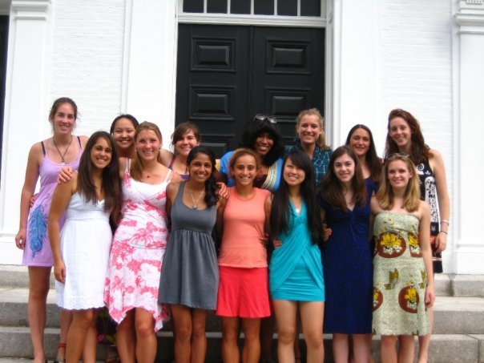
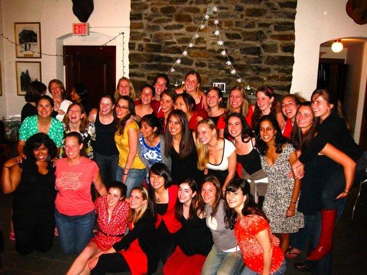
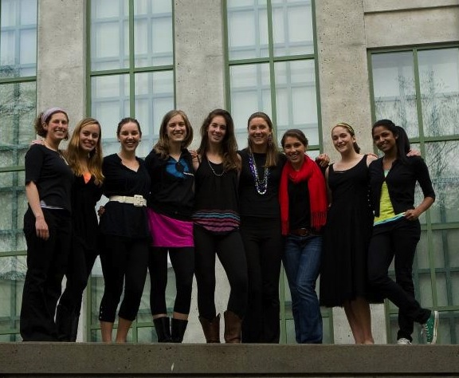

-
-
Without You / We Found Love
Spring 2012
Soloist: Dylan Jarrett '14 and Kelsey Oostdyk '12
Arranged By: Dylan Jarrett '14
-
Samson
Winter 2011
Soloist: Sarah Hanson '12
Arranged By: Chad Cone
-
Speechless
Winter 2011
Soloist: Kate Gard '14
Arranged By: Preston Grover '13
-
Closing Time
Spring 2012
Soloist: 2012 Seniors
Arranged By: Dylan Richards '12
-
Bright Lights
Spring 2012
Soloist: Preston Grover '13
Arranged By: Preston Grover '13